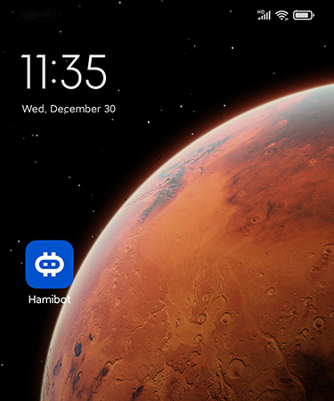
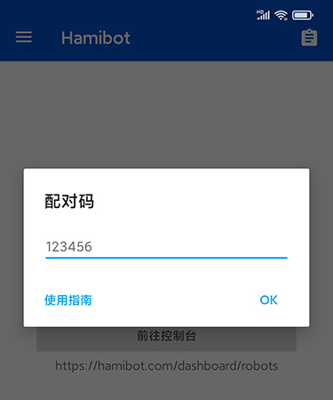

半小时上手 Hamibot：从安装到跑第一条自动化脚本
Hamibot 是一套手机自动化控制方案，通过云端控制台下发指令让安卓设备执行脚本。本文从零带你完成安装、配对、脚本运行的完整闭环，覆盖新手最容易踩的几个坑。
这篇教程写完之后，你手里的安卓手机就能远程接收电脑下发的指令、自动执行脚本了——从安装包到跑第一条测试脚本，跟着走半小时搞定。
准备工作
动手之前先确认两件事：
- 设备：一台安卓 7.0 以上的手机，存储空间至少留 100MB（脚本和截图缓存用）
- 网络：手机要能联网，电脑也要能打开网页控制台
就这两个，别的都不用装。Hamibot 的核心思路是「手机当被控端，网页控制台当控制端」——手机上只装一个 App 常驻后台，所有脚本编写和调试都在网页上完成。
第一步：把 App 装到手机上
安装包从官方下载拿最稳，有三个入口。直链有时候会被运营商限速或拦截，遇到这种情况换扫码或者国内下载页就能解决。
下载完成后在文件管理器里点开 APK，如果系统弹出「未知来源应用」的提示，到设置里给 Hamibot 单独授权就行——小米、华为这些品牌的 ROM 还需要在文件管理器层面再确认一次。

装好先别打开，下一步需要先去网页控制台注册账号。
第二步：注册账号并生成配对码
打开 Hamibot 的官网，用邮箱或手机号注册一个账号，登录后进入控制台。控制台的界面分几块，我们只需要用到「设备」这一页。
进去之后点「添加设备」，页面上会弹出一个短字符串配对码。这个码是一次性的，页面上有倒计时，过期了回退重点一下就能生成新的。
记下这个码，别关控制台页面，转去手机。

第三步：手机上输入配对码
打开手机上的 Hamibot App，主界面中央有个大大的「配对」按钮，点进去把刚才记下的配对码粘上去，确认。
几秒钟之后，App 界面会显示已配对的设备名称。这时候回头看网页控制台，设备列表里也多了一条记录，状态是绿色的「在线」——两端握手完成了。

如果这一步失败，先检查配对码有没有抄错、是不是刚好过期了。配对成功但设备很快掉成灰色离线的情况，大概率是后面会讲到的后台保活问题，先记下手机型号一会儿排查。
第四步：写第一条脚本
现在控制台和手机都连着了，开始写脚本。控制台内置了网页版的 JavaScript 编辑器，不用本地装任何 IDE，语法高亮和自动补全都有。
进「脚本控制台」，点「创建脚本」，给脚本起个名比如 hello_world，编辑器会自动生成一个空文件。Hamibot 的脚本语言是 JavaScript，核心 API 有两类：findOne() 找控件 + click() 点击，还有坐标级的 click(x, y) 和 swipe() 滑动。
写一段最简单的：
auto.waitFor();
toast("Hello Hamibot");保存之后点编辑器右上角的运行按钮，控制台会让你选一台目标设备——选刚刚配对好的那台，确认下发。手机屏幕上应该会弹出一个 Toast 提示 "Hello Hamibot"，同时控制台这边也能看到运行日志实时滚动。
跑通这一条，说明整条链路从脚本下发到设备执行到日志回传都通了。
第五步：远程调试——看不清控件的时候用
写脚本最头疼的往往不是代码逻辑，而是「我到底该选哪个控件」。Hamibot 的远程调试功能就是专门解决这个的。
在控制台设备列表里找到你的设备，点「远程调试」按钮，浏览器里会弹出一个新窗口。这里能看到：
- 手机当前屏幕的实时截图
- 屏幕上所有可识别控件的层级树，每个控件的 id、text、className、坐标 bounds 都列出来
- 脚本运行日志实时输出
- 设备文件系统浏览
不确定一个按钮的选择器怎么写？开调试窗口看控件树，直接复制属性值就行。更完整的控件属性列表和远程调试的参数说明，hamibot文档里有现成的速查表。脚本异常退出了？调试窗口里单步执行或者多打几行日志定位。不用跑过去翻手机，电脑浏览器里全搞定。
调试完记得关掉，远程画面会消耗一些设备资源和带宽。
新手最容易翻车的三个地方
卡一：设备配对成功后过几小时自动离线
这是新人遇到最多的问题。Hamibot App 被系统杀掉了。排查顺序：
- 省电策略：设置 → 应用管理 → Hamibot → 省电策略，必须设成「无限制」或「允许后台活动」
- 自启动：同样在应用管理里，把自启动开关打开
- 后台冻结：有些 ROM 有「锁屏自动清理」「后台冻结」这类功能，检查 Hamibot 有没有被加入清理名单
还有一种情况是 Wi-Fi 路由器主动断开了闲置设备的连接，路由器设置里关掉这个选项就行。如果只有某一台设备特别容易离线，对比一下它和其他稳定设备的 ROM 版本、有没有装额外的安全管家 App。
卡二：脚本里找不到目标控件
findOne() 返回 null 的时候别慌，先开远程调试窗口看控件树。常见原因：
- 控件是图片按钮，没有 text 属性，改用坐标点击
click(500, 300) - 控件在弹窗或页面深处，需要先处理前置页面
- 页面还没加载完，加个
sleep(1000)或者用untilFindOne()带超时的查找
卡三：下载安装包失败
直链 CDN 有时被运营商 QoS 限速或拦截，换手机流量下载、或者切换到官方下载页的入口就行。安装被拦截就去设置里给 Hamibot 单独授权未知来源安装——小米、华为这类品牌的 ROM 在文件管理器层面还要再确认一次。
接下来还能玩什么
现在链路跑通了，可以往这几个方向继续深入：多台设备同时批量下发脚本、脚本源码加密后对外分发、定时任务让设备在指定时间自动触发、或者结合 Hamibot 提供的在线验证机制给脚本加授权保护。文档里每个模块都有详细参数和边界说明，用到哪个查哪个就行。以上脚本示例和操作流程我同步整理到了三个代码仓库，方便随时查阅：GitHub 的镜像仓库和 Gitee、GitCode 的国内备份，内容完全一致。